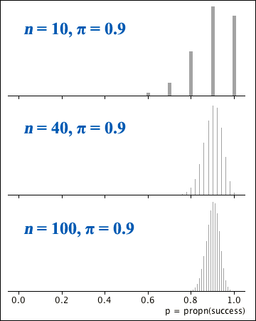

Mode
The distributions of \(X\) and \(P\) are 'unimodal' — there is either a single value (or two adjacent ones) with maximum probability, with probabilities decreasing steadily on each side.
Shape
The distributions of \(X\) and \(P\) are symmetric if \(\pi = 0.5\), but skew with a longer right tail when \(\pi \lt 0.5\) and skew with a longer left tail when \(\pi \gt 0.5\).
As \(n\) increases, the distribution's shape becomes more symmetric.
Centre and spread of \(X\)
Both the mean and variance of \(X\) increase with \(n\).
The variance of \(X\) is highest when \(\pi = 0.5\) and decreases as \(\pi\) approaches 0 or 1.
Centre and spread of \(P\)
The mean of \(P\) is not affected by \(n\), but its variance decreases as \(n\) gets larger.

Normal approximation
The Central Limit Theorem can be applied to the distributions of both \(X\) and \(P\):
\[ \begin{align} X &\;\; \xrightarrow[n \rightarrow \infty]{} \; \; \NormalDistn\left(\mu_X = n\pi, \;\;\sigma_X^2 = n\pi(1-\pi) \right) \\ P &\;\; \xrightarrow[n \rightarrow \infty]{} \; \; \NormalDistn\left(\mu_P = \pi, \;\;\sigma_P^2 = \frac{\pi(1-\pi)} n \right) \end{align} \]